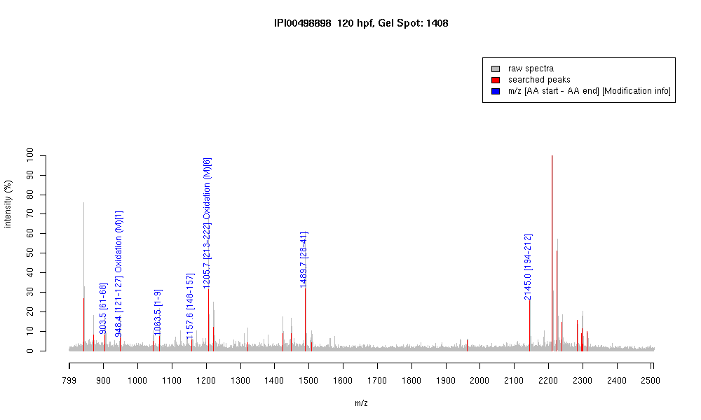

| Name | "Tyrosine 3-monooxygenaseytryptophan5-monooxygenase activation protein, beta polypeptide" |
|---|---|
| MW | 27375.5 |
| PI | 4.68 |
| Mascot Protein Score | 67 |
| Masses (matched / unmatched) | 7 / 25 |

| Peptide | MZ (calc) | MZ (observed) | Error (DA) | Error (PPM) | Start | Stop | Modifications |
|---|---|---|---|---|---|---|---|
| VISSIEQK | 903.5145 | 903.5258 | 0.0113 | 13 | 61 | 68 | |
| MKGDYYR | 948.4243 | 948.4412 | 0.0169 | 18 | 121 | 127 | Oxidation (M)[1] |
| MDKSDLVQK | 1063.5453 | 1063.5294 | -0.0159 | -15 | 1 | 9 | |
| AYQDAFDISK | 1157.5474 | 1157.5959 | 0.0485 | 42 | 148 | 157 | |
| DSTLIMQLLR | 1205.6559 | 1205.6779 | 0.022 | 18 | 213 | 222 | Oxidation (M)[6] |
| AVTEGGVELSNEER | 1489.7129 | 1489.7494 | 0.0365 | 25 | 28 | 41 | |
| TAFDEAIAELDTLNEDSYK | 2144.9871 | 2145.0205 | 0.0334 | 16 | 194 | 212 |